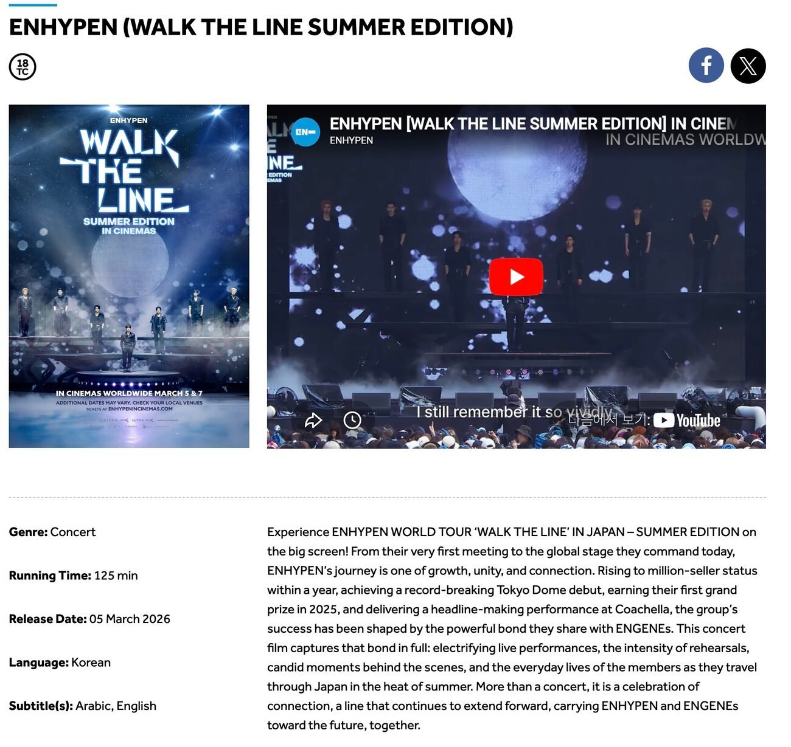
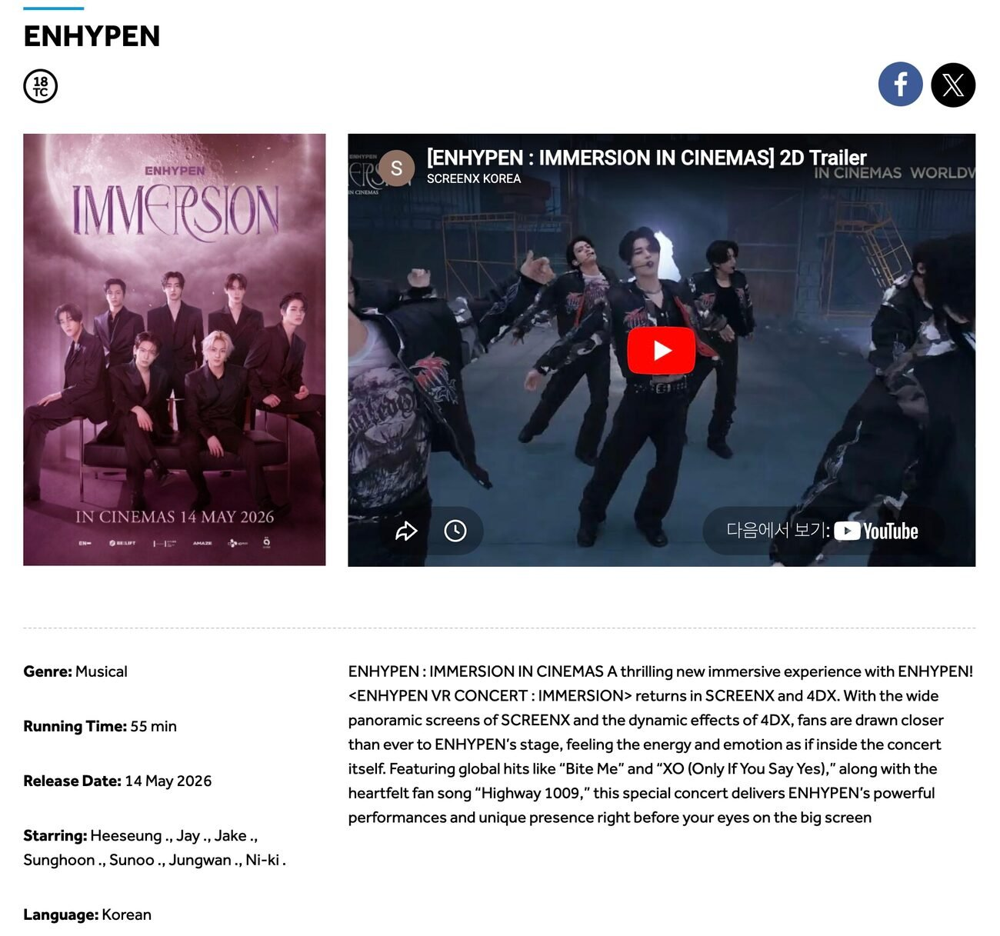
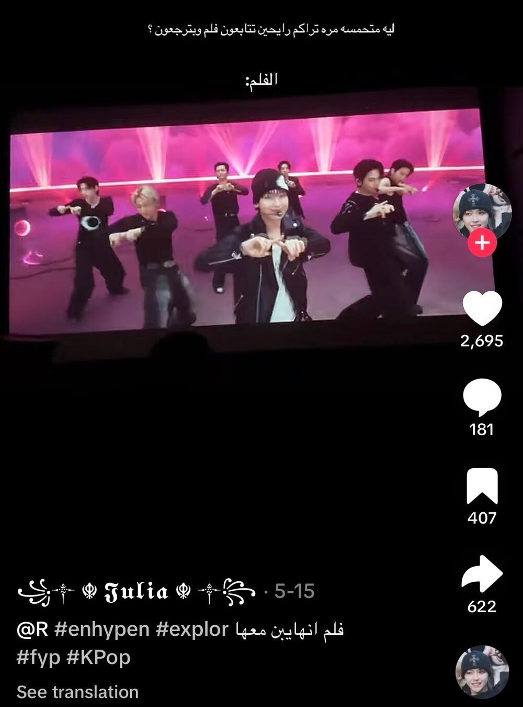
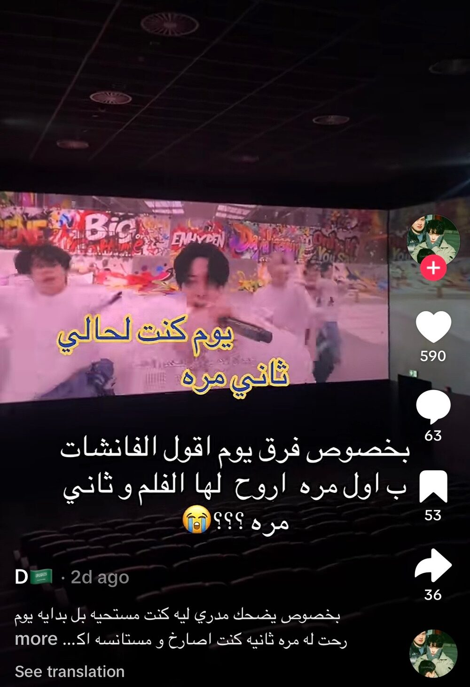
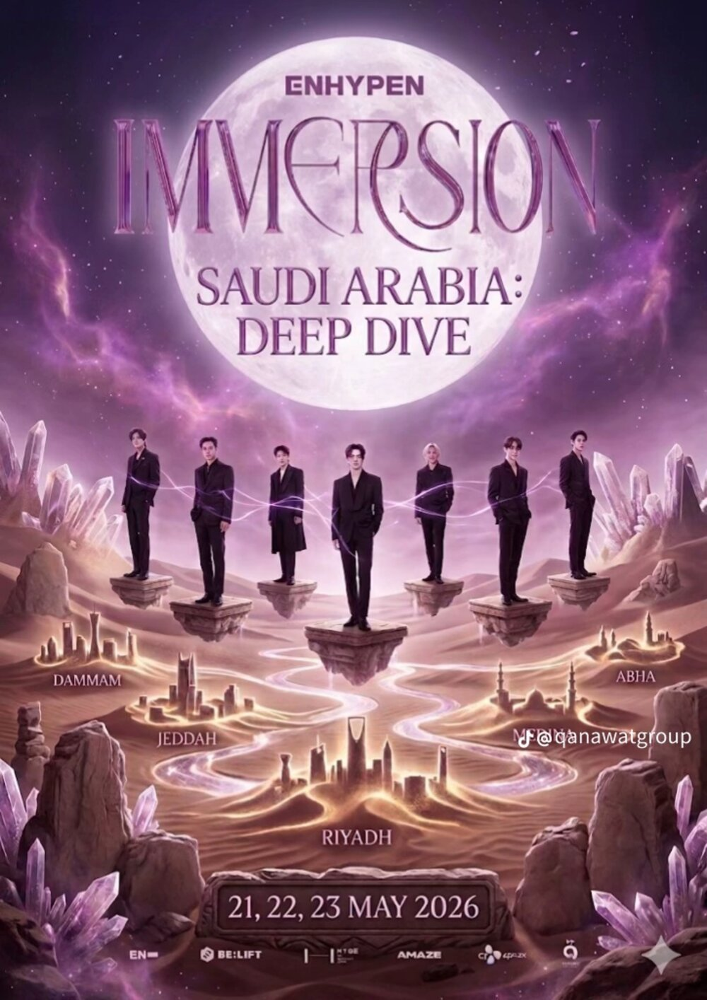

최근 사우디아라비아 주요 영화관에서 그룹 엔하이픈(ENHYPEN)의 공연 기반 영화 콘텐츠가 잇따라 상영되며 현지 케이팝 팬들의 관심을 모았다. 사우디에서는 지난 3월 콘서트 필름 〈워크 더 라인 - 서머 에디션(WALK THE LINE – SUMMER EDITION)〉이 개봉한 데 이어, 5월에는 스크린엑스(ScreenX)·포디엑스(4DX) 기반 체험형 콘텐츠 〈엔하이픈: 이머전 인 시네마(ENHYPEN: IMMERSION IN CINEMAS)〉가 새롭게 상영됐다.

사우디 현지 극장에서 개봉한 엔하이픈 콘텐츠 〈워크 더 라인〉 — 출처: 복스 시네마(Vox Cinemas) 홈페이지

사우디 현지 극장에서 개봉한 엔하이픈 콘텐츠 〈이머전 인 시네마〉 — 출처: 복스 시네마(Vox Cinemas) 홈페이지
해당 작품들은 무비 시네마(MUVI Cinemas), 복스 시네마(VOX Cinemas), 릴 시네마(REEL Cinemas) 등 사우디 주요 멀티플렉스 체인에서 상영됐으며, 영어와 아랍어 자막이 함께 제공됐다. 특히 10~20대 여성 관객들의 반응이 두드러졌으며, 일부 상영관에서는 관객들이 노래를 따라 부르거나 함께 환호하는 등 실제 콘서트장과 유사한 분위기가 연출되기도 했다.
영화관에서 이어지는 '대체 콘서트 경험'
최근 사우디에서는 콘서트 필름과 라이브 뷰잉(Live Viewing) 등 공연 기반 콘텐츠의 극장 상영이 점차 늘어나는 추세다. 엔하이픈 영화 역시 이러한 흐름 속에서 현지 관객들과 만나고 있다. 특히 최근 상영된 〈엔하이픈: 이머전 인 시네마〉는 스크린엑스와 포디엑스 포맷을 활용한 체험형 시네마 콘텐츠로, 공연 장면과 몰입형 연출을 결합해 현장감을 극대화했다. 〈바이트 미(Bite Me)〉, 〈엑스오(XO)〉 등 대표곡 무대는 대형 스크린과 입체 효과를 통해 더욱 생생하게 전달됐으며, 관람객들이 실제 공연장에 가까운 현장감을 느낄 수 있도록 구성됐다.
사우디 내 케이팝 팬덤은 단순한 온라인 소비를 넘어 영화관을 중심으로 한 집단적 문화 경험으로 점차 확장되고 있다. 한국 아이돌 그룹의 사우디 현지 단독 공연 기회가 아직 많지 않은 상황에서 영화관에서의 케이팝 관련 영상 상영은 팬들이 공연의 분위기를 간접적으로 체험하는 방식으로 자리 잡고 있다. 사회관계망서비스(SNS)에 공유된 현장 영상들에서는 관객들이 함께 응원하고 환호하는 모습이 확인됐다. 특히 젊은 여성 팬층을 중심으로 단체 관람 문화가 형성되며 일부 상영관은 실제 콘서트장과 유사한 분위기를 연출하기도 했다. 현지 팬덤은 콘서트 필름 상영을 단순 영화 관람이 아닌 공연형 이벤트 콘텐츠로 소비하는 양상을 보였으며, 일부 팬들은 이를 "인생에 한 번 있을 순간"이라고 표현하기도 했다.

틱톡에 공유된 관람 현장 — 출처: 엔하이픈 팬 틱톡(TikTok) 계정(@Julia_x134)

틱톡에 공유된 관람 현장 — 출처: 엔하이픈 팬 틱톡(TikTok) 계정(@d0hal80)
한편 사우디 엔터테인먼트 기업 카나와트 그룹(Qanawat Group)은 지난 5월 21일부터 23일까지 엔하이픈 관련 VR 기반 이머시브(Immersive) 체험 콘텐츠를 운영했다. 해당 콘텐츠는 수도 리야드를 비롯해 담맘, 제다, 메디나, 아바하 등 사우디 주요 도시에서 진행됐으며, 관람객들은 VR 기기를 착용한 상태에서 공연형 콘텐츠를 체험하는 방식으로 참여했다. 이는 영화관에서 상영된 콘서트 필름과는 또 다른 형태의 몰입형 팬 경험 콘텐츠로, 사우디 내 케이팝 팬덤 소비가 극장 상영을 넘어 VR 체험형 콘텐츠 영역까지 확장되고 있음을 보여준다.

엔하이픈 이머시브(Immersive) 브이알(VR) 체험형 콘텐츠 — 출처: 카나와트 그룹 인스타그램(Instagram) 계정(@qanawatgroup)
굿즈·SNS·플랫폼으로 이어지는 팬덤 소비
사우디에서는 2018년 영화관 재개방 이후 콘서트 필름, 애니메이션 특별 상영, 라이브 뷰잉(Live Viewing) 등 이벤트형 콘텐츠 소비가 젊은 세대를 중심으로 빠르게 확대되고 있다. 넷플릭스(Netflix), 유튜브(YouTube), 스포티파이(Spotify) 등 디지털 플랫폼 중심 소비와 함께 극장과 오프라인 체험형 콘텐츠가 결합되며 케이팝 팬덤 문화 역시 다양한 형태로 변화하는 모습이다.
이러한 흐름 속에서 엔하이픈(ENHYPEN)은 아랍권, 특히 걸프협력회의(GCC) 지역 10~20대 여성 팬층 사이에서 비교적 높은 온라인 반응을 얻고 있다. 엔하이픈은 그룹 방탄소년단(BTS)의 소속사 하이브(HYBE) 산하 레이블 빌리프랩(BELIFT LAB) 소속 그룹으로, 퍼포먼스 중심의 무대 연출과 서사형 콘셉트 콘텐츠를 꾸준히 선보이며 글로벌 팬층을 형성해왔다.
사우디 내 미니소(MINISO) 매장에서는 엔하이픈 관련 앨범과 굿즈 판매가 이뤄지고 있으며, 일부 팬들은 SNS를 통해 관련 구매 후기를 공유하고 있다. 중동 전자상거래 플랫폼 눈(Noon)과 아마존 사우디(Amazon Saudi)에서도 관련 상품 구매가 가능하다. 이처럼 공연 영상 상영부터 VR 체험 콘텐츠, 굿즈 소비, SNS 참여 문화까지 다양한 접점이 형성되며 사우디 내 케이팝 팬덤 문화도 보다 입체적인 형태로 확장되고 있다.
사진출처 및 참고자료
— 복스시네마(Vox Cinemas) 홈페이지 내 엔하이픈 콘텐츠 소개 페이지, ksa.voxcinemas.com/movies/enhypen-korean
— 엔하이픈(ENHYPEN) 팬 틱톡(TikTok) 계정 1(@Julia_x134)
— 엔하이픈(ENHYPEN) 팬 틱톡(TikTok) 계정 2(@d0hal80)
— 중동 전자상거래 웹사이트 눈(Noon), noon.com/saudi-en
— 카나와트 그룹(Qanawat Group) 공식 인스타그램(@qanawatgroup), instagram.com/qanawatgroup